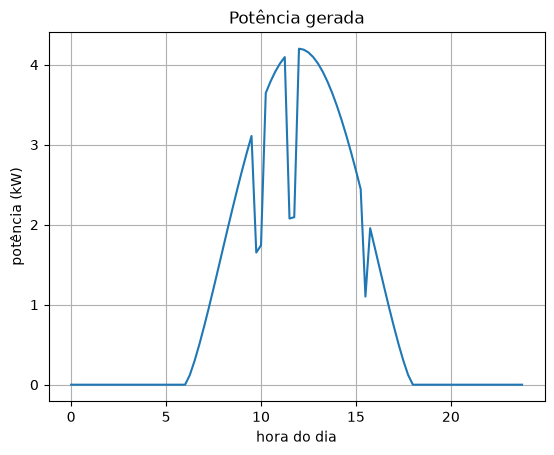
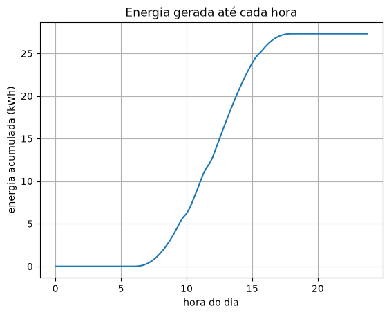
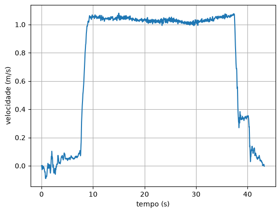
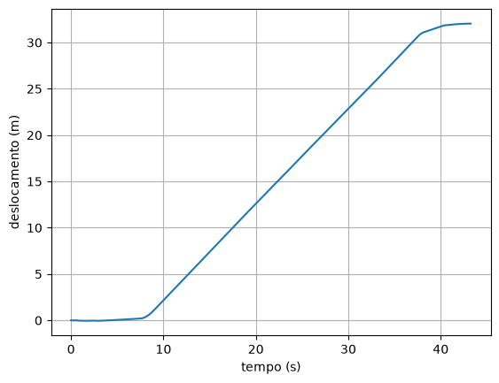

12. Integrando dados medidos¶
O capítulo 11 integrou funções: dava para calcular \(f\) em qualquer ponto e escolher quantas faixas usar. Na prática, como no capítulo 3 com as derivadas, o que chega é uma tabela: a potência de um painel solar a cada 15 minutos, a intensidade da chuva quando ela muda, a aceleração que o celular mede 50 vezes por segundo. A integral dessas tabelas responde a perguntas de "quanto no total": quanta energia, quanta chuva, que distância.
Este capítulo trata de três coisas novas: o espaçamento irregular, a integral acumulada (o total até cada instante, e não só no fim) e um efeito que é o contrário do que se viu nas derivadas: integrar suaviza o ruído, mas acumula os erros sistemáticos.
Integrar uma tabela¶
🌍 Contexto: o pluviômetro automático
Estações meteorológicas medem a intensidade da chuva (em mm por hora). Muitas registram um valor novo só quando a intensidade muda, e por isso os horários da tabela são irregulares. A chuva total, em milímetros, é a integral da intensidade no tempo.
Com horários irregulares, a regra do trapézio de faixas iguais não serve, mas a ideia serve: um trapézio por faixa, cada um com a sua largura.
# Um pluviometro automatico registra a INTENSIDADE da chuva (mm/h) so quando ela
# muda: os horarios sao irregulares. Quanta chuva caiu no total?
horas = [14.0, 14.25, 14.5, 14.6, 14.75, 15.0, 15.5, 16.0, 17.0]
intensidade = [0.0, 4.0, 18.0, 42.0, 35.0, 20.0, 8.0, 2.0, 0.0] # mm/h
total = 0.0
for i in range(len(horas) - 1):
largura = horas[i + 1] - horas[i]
total = total + largura * (intensidade[i] + intensidade[i + 1]) / 2
print(f"chuva total: {total:.1f} mm")
Quase 30 mm em três horas: uma chuva forte. Simpson, que precisa de faixas iguais, não se aplica direto. Com dados medidos, o trapézio faixa por faixa é quase sempre a escolha.
A integral acumulada¶
Às vezes a pergunta não é só "quanto no total", mas "quanto até cada instante". A energia que um painel solar gerou até o meio-dia; a distância que um carro percorreu até cada segundo. É a integral acumulada, uma nova tabela com um valor por instante.
🧑🏫 No quadro — a integral acumulada
1. A integral de \(t_0\) até \(t_i\) é a integral até \(t_{i-1}\) mais a faixa nova, de \(t_{i-1}\) a \(t_i\):
2. Em código, é o padrão acumulador do Python básico, com a área de um
trapézio no lugar do + 1.
3. É o caminho inverso da derivada de dados do capítulo 3: lá, a diferença entre vizinhos dava a taxa; aqui, a soma das faixas refaz o total.
🌍 Contexto: energia solar numa casa
Um painel solar gera potência (em kW), que varia com o sol e com as nuvens. A conta de luz é cobrada em energia (kWh): potência vezes tempo, ou seja, a integral da potência. Um painel de 4 kW que gerasse o máximo por uma hora produziria 4 kWh.
# Um painel solar numa casa: potencia gerada (kW) a cada 15 minutos. A energia
# acumulada ate cada instante e a integral da potencia do inicio ate ali.
import numpy as np
import matplotlib.pyplot as plt
dados = np.loadtxt("energia_casa.csv", delimiter=",", skiprows=1)
hora = dados[:, 0]
potencia = dados[:, 1] # kW
energia = np.zeros(len(hora)) # kWh acumulados
for i in range(1, len(hora)):
faixa = (hora[i] - hora[i - 1]) * (potencia[i] + potencia[i - 1]) / 2
energia[i] = energia[i - 1] + faixa # o total ate aqui = o anterior + a faixa nova
print(f"energia gerada no dia: {energia[-1]:.2f} kWh")
print(f"ate o meio-dia: {energia[48]:.2f} kWh")
plt.figure()
plt.plot(hora, potencia)
plt.xlabel("hora do dia")
plt.ylabel("potência (kW)")
plt.title("Potência gerada")
plt.grid()
plt.show()
plt.figure()
plt.plot(hora, energia)
plt.xlabel("hora do dia")
plt.ylabel("energia acumulada (kWh)")
plt.title("Energia gerada até cada hora")
plt.grid()
plt.show()


A energia acumulada é uma curva em S: sobe devagar de manhã, depressa ao meio-dia e achata à tarde. As quedas de potência por causa das nuvens aparecem na energia apenas como uma inclinação menor por alguns minutos. A integral suaviza o ruído, o contrário do que a derivada fazia.
O elevador: da aceleração ao deslocamento¶
O acelerômetro do celular, no elevador do capítulo 3, mede a aceleração. Integrando uma vez, sai a velocidade; integrando a velocidade, o deslocamento.
# Dado real: o acelerometro do celular no elevador. Integrando a aceleracao
# uma vez, a velocidade; integrando de novo, o deslocamento.
import numpy as np
import matplotlib.pyplot as plt
dados = np.loadtxt("elevador_lacouth.csv", delimiter=",", skiprows=4)
t = dados[:, 0]
a = dados[:, 3] # aceleracao vertical (m/s²)
v = np.zeros(len(t)) # comeca parado
for i in range(1, len(t)):
v[i] = v[i - 1] + (t[i] - t[i - 1]) * (a[i] + a[i - 1]) / 2
x = np.zeros(len(t)) # comeca na posicao 0
for i in range(1, len(t)):
x[i] = x[i - 1] + (t[i] - t[i - 1]) * (v[i] + v[i - 1]) / 2
print(f"velocidade maxima: {np.max(abs(v)):.2f} m/s")
print(f"velocidade no fim: {v[-1]:.3f} m/s")
print(f"deslocamento total: {x[-1]:.2f} m")
plt.figure()
plt.plot(t, v)
plt.xlabel("tempo (s)")
plt.ylabel("velocidade (m/s)")
plt.grid()
plt.show()
plt.figure()
plt.plot(t, x)
plt.xlabel("tempo (s)")
plt.ylabel("deslocamento (m)")
plt.grid()
plt.show()


O elevador subiu 32 metros (cerca de 11 andares) a pouco mais de 1 m/s, e a velocidade voltou a zero no fim, como tinha de ser: ele parou. Nenhuma trena foi usada. O ruído que atrapalhava tanto a derivada (o jerk de ±70 m/s³) não atrapalhou nada aqui.
Integrar acumula erros¶
A integral suaviza o ruído aleatório, que sobe e desce e se cancela. Mas um erro sistemático, que empurra sempre para o mesmo lado, não se cancela: ele se acumula.
# Quebre o metodo: um acelerometro com um pequeno erro fixo (0,01 m/s², um
# milesimo da gravidade) integrado duas vezes.
import numpy as np
dados = np.loadtxt("elevador_lacouth.csv", delimiter=",", skiprows=4)
t = dados[:, 0]
for erro in [0.0, 0.01, 0.05]:
a = dados[:, 3] + erro
v = np.zeros(len(t))
x = np.zeros(len(t))
for i in range(1, len(t)):
v[i] = v[i - 1] + (t[i] - t[i - 1]) * (a[i] + a[i - 1]) / 2
x[i] = x[i - 1] + (t[i] - t[i - 1]) * (v[i] + v[i - 1]) / 2
print(f"erro de {erro:.2f} m/s²: velocidade final {v[-1]:6.3f} m/s, deslocamento {x[-1]:6.2f} m")
erro de 0.00 m/s²: velocidade final -0.003 m/s, deslocamento 32.04 m
erro de 0.01 m/s²: velocidade final 0.429 m/s, deslocamento 41.39 m
erro de 0.05 m/s²: velocidade final 2.159 m/s, deslocamento 78.79 m
💥 Quebre o método
Um erro de calibração de apenas 0,01 m/s² (um milésimo da gravidade) somado a cada leitura faz a velocidade final sair 0,43 m/s, e não zero, e o deslocamento aumentar mais de 9 metros. Integrada uma vez, uma constante vira uma reta (\(v = 0{,}01\,t\)); integrada de novo, vira uma parábola (\(x = 0{,}005\,t^2\)). Em 43 segundos, \(0{,}005 \times 43^2 \approx 9{,}3\) m. É por isso que um celular não consegue saber a sua posição integrando o acelerômetro por muito tempo: em minutos, o erro chega a quilômetros. Os sistemas de navegação corrigem a deriva o tempo todo com outra informação (GPS, câmeras, o fato de o elevador ter parado).
A regra prática é o espelho do capítulo 3: derivar amplifica o ruído; integrar acumula os erros sistemáticos. Uma boa conferência é a que o elevador permite: a velocidade final tem de dar zero.
Mesmo método, outra área¶
🌍 Contexto: tráfego de uma rede
O roteador de uma empresa mede a taxa de dados que passa por ele (em megabits por segundo) a cada poucos minutos. O contrato com a operadora, ou o dimensionamento de um link, pergunta pelo volume total de dados no dia (em gigabytes): a integral da taxa. Um detalhe de unidades: 8 bits formam 1 byte.
# Mesmo metodo, outra area: telecomunicacoes. O roteador de uma empresa registra
# a taxa de transferencia (Mbit/s) a cada 5 minutos. Quantos gigabytes passaram
# no dia? A quantidade de dados e a integral da taxa.
import numpy as np
minutos = np.linspace(0, 1440, 289) # um dia, de 5 em 5 minutos
hora = minutos / 60
taxa = 20 + 180 * np.exp(-((hora - 11) / 2.5)**2) + 120 * np.exp(-((hora - 15.5) / 2)**2) # Mbit/s
h = 5 * 60 # 5 minutos, em segundos
megabits = h / 3 * (taxa[0] + 4 * np.sum(taxa[1:-1:2]) + 2 * np.sum(taxa[2:-1:2]) + taxa[-1])
gigabytes = megabits / 8 / 1000
print(f"taxa maxima: {np.max(taxa):.0f} Mbit/s, as {hora[np.argmax(taxa)]:.1f} h")
print(f"dados no dia: {gigabytes:.1f} GB")
Com os registros igualmente espaçados (e 288 faixas, um número par), Simpson volta a servir. A mesma integral que mediu chuva e energia mede dados.
Erros comuns deste capítulo¶
| Sintoma | Causa provável |
|---|---|
| total errado com horários irregulares | usou uma largura \(h\) única; em dados, cada faixa tem a sua largura |
| a integral acumulada tem um elemento a menos | começou a lista vazia em vez de com \(E_0 = 0\) |
| a velocidade integrada não volta a zero quando devia | erro sistemático (offset) no sensor; subtraia a média de um trecho parado antes de integrar |
| o resultado sai 8 vezes maior (ou menor) | bits e bytes: 1 byte = 8 bits |
| unidades estranhas | minutos e horas misturados: a largura da faixa tem de estar na mesma unidade de tempo da taxa |
Onde isso é usado de verdade¶
- Contas de energia e de dados: medidores inteligentes registram a potência e o sistema integra para faturar em kWh; operadoras integram a taxa para cobrar em GB.
- Navegação inercial: aviões, submarinos e celulares integram acelerômetros e giroscópios para estimar a posição entre um sinal de GPS e outro, com correção constante da deriva.
- Hidrologia e agricultura: chuva acumulada, vazão de rios integrada em volume, irrigação.
- Esporte e saúde: a distância de uma corrida a partir da velocidade, as calorias a partir da potência (em bicicletas com medidor), a "área sob a curva" de glicose.
- Finanças: o valor acumulado de uma aplicação com taxa variável.
Resumo¶
- Em tabelas com espaçamento irregular, integre faixa por faixa, cada trapézio com a sua largura.
- A integral acumulada soma as faixas uma a uma: \(E_i = E_{i-1} + \text{faixa}_i\).
- Integrar duas vezes leva de aceleração a velocidade e de velocidade a posição.
- Integrar suaviza o ruído aleatório, mas acumula erros sistemáticos (deriva). Confira com o que se sabe do problema (o elevador parou).
- Com dados igualmente espaçados e um número par de faixas, Simpson também serve.
Para praticar¶
A Lista 12 começa com uma integral acumulada à mão (✏️) e segue com a distância de um corredor, a carga de uma bateria, o volume de água de uma caixa-d'água e a correção da deriva de um sensor.